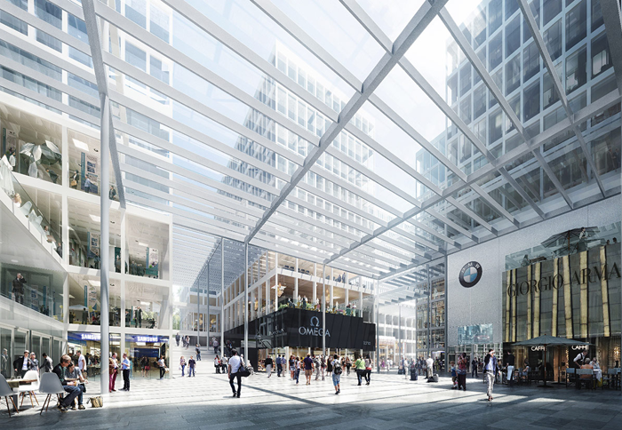

01.06.2015 THE CIRCLE, FLUGHAFEN ZÜRICH
NYX architectes GmbH ist vom Architekturbüro Richter Dahl Rocha & Associés architectes SA in Lausanne für die Ausführungsplanung eines Teilobjektes von “The Circle” am Flughafen Zürich beauftragt worden. NYX architectes bearbeitet hauptsächlich die Ausführungsplanung des Gebäudes H15. Das 10-geschossige Gebäude besteht aus Gewerbeflächen, Büroräume, Bars, Restaurants und ein 4* Superior Hotel (Hyatt Regency) mit 256 Zimmer.
Der Projektverfasser und das leitende Architekturbüro ist Riken Yamamoto & Fieldshop aus Yokohama, Japan. Die für die Ausführung verantwortliche Totalunternehmerin ist die Firma HRS Real Estate AG in Zürich.